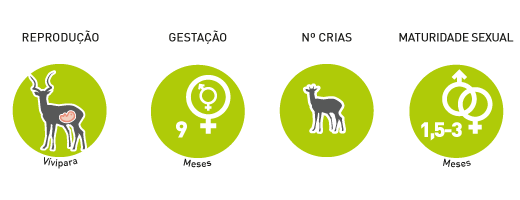

Gnu białobrode
Connochaetes taurinus albojubatus
Rząd:parzystokopytne
Rodzina:krętorogie
Charakterystyka

Podgatunek gnu pręgowanego, o białym ubarwieniu włosów, brody i podgardla. Posiada charakterystyczną sylwetkę. Rogi występują u obu płci.
Tryb życia
Antylopa żyjąca w ogromnych stadach, często wraz z innymi gatunkami zwierząt. W poszukiwaniu pokarmu odbywa długie wędrówki, w czasie których pokonuje wiele przeszkód, np. głębokie rzeki.
Rozmnażanie

Dominujące byki bronią dostępu do haremu złożonego z samic, z którymi łączą się w pary. Najwięcej cieląt ok.80-90% rodzi się na początku pory deszczowej, gdy warunki są najbardziej korzystne. Tworzy się wtedy przesyt dla drapieżników, który pomaga chronić cielęta.
Zasięg i siedlisko

Sawanna
Ochrona

Zagrożenia: Masowe polowania i zmniejszenie siedlisk w wyniku działalności człowieka.